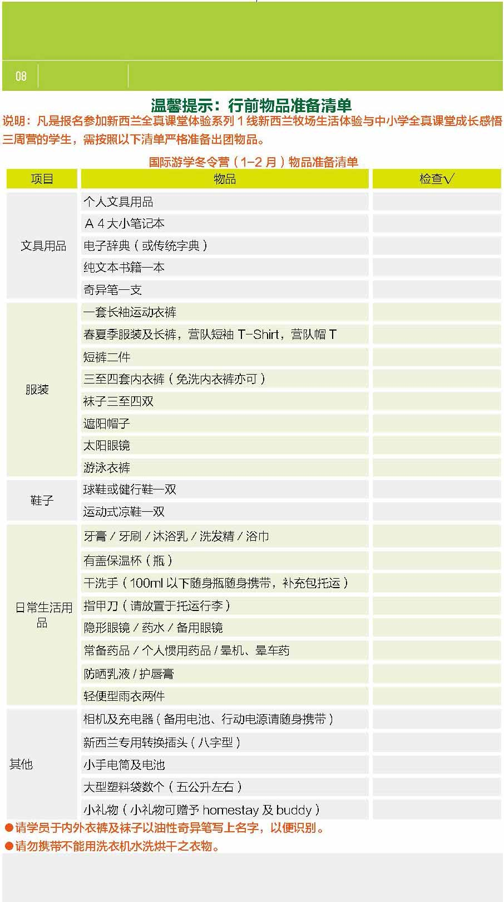
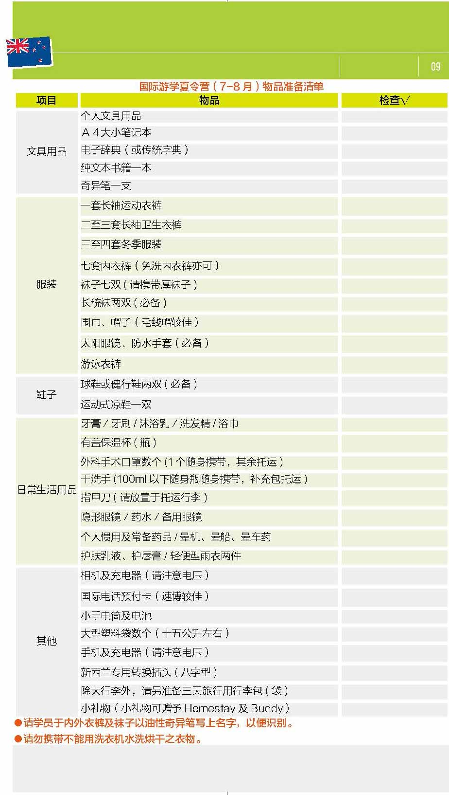
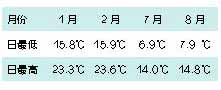

给即将出发的你，请务必知悉，游学安全告知书！
本告知书旨在提示团员在游学期间遵守游学目的国法律法规，遵守中国公 民出境旅游文明行为指南，遵守社会公共秩序和社会公德，遵守旅游文明 行为规范，遵守学校和营地的校规、营规，尊重当地的风俗习惯、文化传 统和宗教信仰，爱护旅游资源，保护生态环境，注意人身及财产安全，特 别提示内容如下：
1、寄宿家庭成员并非全部为白人，团员应同寄 宿家庭成员和睦共处，严禁种族歧视，严格遵 守所在家庭的生活习惯，按照寄宿家庭要求正 确使用各种电器设施，确保安全
2、住宿期间，安全用火，用电，如若发生火灾， 应用毛巾捂住口鼻，从疏散出口迅速撤离。
3、入住酒店时，保管好房卡或钥匙，损坏须照 价赔偿。房间内有免费和收费物品，使用前务 必进行确认，如消费了付费用品，所产生的费 用由旅团承担。
4、活动结束后晚上回到酒店、寄宿家庭、学生 公寓后，禁止单独外出，以避免遭遇抢劫或其 他非安全隐患等事件。
5、离开寄宿家庭、酒店、学生公寓、营地等 居住场所前，应仔细检查所携带的证件、钱财、 行李等物品，避免遗落。
1、要熟悉所在国的交通信号标志，遵守交通法 规，尤其注意右驾习惯国家（包括但不限于： 英国、澳大利亚、新西兰、日本、马来西亚、 新加坡、香港、澳门）的行车规则，过马路时 需关注两侧的车辆，在安全的情况下通行。
2、等候公共交通（包括但不限于巴士、地铁） 期间，不要嬉戏打闹，在安全区域内等候；乘 坐交通工具（包括但不限于飞机、巴士和轿 车）应系好安全带，严禁在行驶中站立、行走 和嬉戏。
3、通过十字路口或行走时，关注路况和周围 的环境，避免因佩戴耳机听音乐、玩游戏等分 散注意力引起不必要的交通事故。
4、如意外发生交通事故，不要惊慌，采取自 救和相互救援的措施，保护好现场，并迅速报 告带团导师或工作人员。
1、中西方饮食观念存在差异，西方多以生食、 冷食为主，为体验中西饮食文化差异，需做到 入乡随俗。
2、国外大多国家的自来水可直接饮用（注意： 温热水为非饮用水，冷水为饮用水，若要饮用 热水需自行烧开）。
3、注意饮食安全卫生，在行程中指定的用餐 地点、寄宿家庭用餐，不随意购买和饮用地摊 或小商贩提供的饮料食品。
4、牢记自己的饮食禁忌，合理选择食品，不 盲目尝鲜，贪吃，乱吃，禁食对自身身体状况 会造成过敏或其它不良反应的食品，游学活动 全程严禁饮酒。
户外活动包括但不限于登山、森林探险、牧场和营区活动等。
1、应在指定区域活动，注意安全，严禁在无监护情况下私自活动。
2、参加活动时，严禁私自进行非行程中安排的 游泳、潜水等活动。
3、在景区活动时，请紧随带队人员一同游览， 避免掉队或迷路。自由活动期间，需仔细聆听 新东方带团导师或工作人员交代的各种注意事 项，谨记带团导师或当地导游的联系方式，在 指定区域活动，并保持联系方式畅通，按指定 时间及地点集合，不得擅自脱离指定区域。
4、开展娱乐活动时要注意娱乐项目的安全提示， 并根据自己身体状况选择活动项目。
1、游学期间严禁私自在任何场合游泳，包括但 不限于寄宿家庭、学生公寓、营地、学校、酒 店等的游泳场所，严禁使用健身器材和酒店的 桑拿设施（行程中安排项目除外，参加活动时 须听从安排，遵守各项安全条例）。
2、游学期间妥善保管自己的财物，尤其是在 公共场所人多时，更应注意。如有个人购买行为， 请务必索取完整的发票和购买证明。对移动摊 贩摆列物品如无意购买，切勿与商贩讨价还价， 以免发生争执。凡境外涉及除自身购物外，其 他额外支付钱财等经济问题，请直接与团员所 在团的新东方紧急联系人沟通确认，勿私自委 托导游或其他个人代为支付。
3、游学期间团员间应保持文明友好、和睦相 处的处事态度，相互包容。很多西方国家法律 法规严明，肢体接触会被视为不礼貌的行为， 公共场所吵架、相互谩骂会引起周围人的报警， 如发生严重的打架斗殴事件更会造成拒绝当事 人再次入境、留学目的国被拒签的不良影响。
4、游学期间不拿、不看法轮功等组织发放的 资料；如若发生，入境中国时将会直接被海 关扣留。
5、游学期间团员要有安全防范意识，学会自 我保护，做到自尊、自爱、自重，拒绝不良诱 惑；对其个人行为做好自我管理，严禁打架斗 殴、吸食毒品、偷抢他人钱物、非法侵占他人 钱物等行为发生，否则由此造成的后果自行承 担。如给第三方造成伤害，应当承担相应的赔 偿责任。
6、游学全程中（包括但不限于活动期间、回 酒店 / 寄宿家庭 / 学生公寓 / 营地休息期间）， 严禁脱离团队或者私自外出，若有特殊情况需 提前与带团导师沟通并征得同意，否则由此造 成的任何后果自行承担。
1、团员应确保自身健康状况无任何不适合参加 本次游学活动的传染性疾病、心理类或精神类疾病（包括但不限于：抑郁症、焦虑症、狂躁症、阿斯伯格综合症、自闭症、癫痫等）以及有学习、生活方面的障碍，需要专人特别指导或照顾的情况。
2、同意并授权带团导师等在团员发生疾病或 意外事故时，进行及时协助和护理，并在需要 时提供医疗服务。
3、团员因健康状况需要经常性服药或治疗的， 应确保具备自理和自我照料能力，严格遵照医 嘱备足游学期间的药量，并按时按量服用。
4、如团员有食物过敏史，团员本人有义务判 断食用的食物是否可能导致过敏症状，对食用 的食物负有检查的最终责任。
安全告知内容包括但不限于以上内容，在日常 工作中，新东方国际游学工作人员以口头、电 子邮件、短信、微信、告知书等形式对团员做 出的各类安全提示也请注意并遵守。检查的最终责任。


如何顺利出入境
1 . 全程护照交由领队老师统一保管，但是在安 检、出入境等必须要本人亲自携带护照时，领 队老师将会交到你的手上亲自保管，请务必保 管好，丢失将无法值机及出入境。一旦不需要 本人必须亲自携带护照时，请务必第一时间将 护照交给领队老师保管。
2. 托运行李时切勿将贵重物品以及证件放在行 李箱中，应随身携带
3. 过边检时请耐心排队，如遇到任何困难可以 请教领队，需要申报物品请避免携带。
4. 过安检的时候，小心不要落下你的物品。
5. 飞机会提前半个小时左右关闭舱门，集合时 一定不可以迟到。
如果你是自备签或者免签，出发当天不要忘 记携带你的有效护照或者你回到中国的有效签 证哦 ~
1. 入境审核时请有序排队进行，此时请勿拍照， 遇到回答不了的问题可以求助领队。
2. 提取行李后检查是否拿错，切记不要着急 撕掉行李条，若行李有问题，请第一时间联 系领队。
3. 海关抽查时不要慌张，配合海关人员即可。
1）不允许带上飞机的物品：
超过100 毫升的液体、凝胶及喷雾类产品包括饮品，例如矿泉水、饮料、汤及糖浆；乳霜、护肤液、护肤油、香水及化妆品；喷雾及压缩容器，例如剃须泡沫及香体喷雾；膏状物品，例如牙膏；隐形眼镜药水；凝胶，例如头发定型及沐浴用的凝胶产品；任何稠度相似的溶液及物品。金属利器如剪刀、水果刀等必须进行托运，不可随身携带。托运行李原则上不上锁，海关会有10%-20% 的抽查率，如果一定要上锁，海关有可能撬开箱检查，也许会毁坏箱体。海关锁是允许使用的，即使抽检也不会损坏箱子。所以箱子中不可以放任何贵重物品。
2）不能携带入境的物品：
特殊药品（精神类药品，含麻醉成分的咳嗽药， 镇定剂，安眠药等）、大部分农作物 ( 水果、 蔬菜 )、肉类（肉干、火腿肠）等黄金（不能超 过 200 克）。可以放任何贵重物品。
上飞机后找到自己的座位，把随身携带的物品放在头顶上方的行李架上，较重物品可放在座位下面，但不要把东西放在安全门前或出入通道上。飞行过程中除非有事必须离座，否则全程系好安全带，如发生任何状况，应保持镇静，听从空乘人员指示。在飞机上请保持安静，可以小声交谈，不要大声喧哗，更不得离座追逐打闹，以免影响他人休息。飞机上的餐饭有时候可能不够吃，所以请同学根据自己的实际情况酌情带一些飞机上吃的零食，但不要太多。
入境时，需排队先后通过新西兰移民局和海关；在移民局，需要出示：有效护照和签证、飞机上填写好的海关申报单（由领队老师统一在飞机上填写，但需本人亲自签字）。请不要携带超过2 万美金的现金或违禁物品，否则海关会要求学生走申报通道，造成入关不便。
海关会问几个常规的问题：
来新西兰的目的?
都去哪些城市？
来自中国的什么地方？?
在新西兰停留多久？
对工作人员提出的问题，照实回答即可；如有解答不了的或者听不懂问题，可寻求领队老师的帮助。？
以下是一些入境时常用的英语问答：
Q: What's the purpose of your visit? ( 你来新西兰的目的是什么？ )
A: I am here for a summer/winter studytour. （我是来参加夏/ 冬令营）
Q: How long will you stay in the NewZealand? ( 你会在新西兰停留多长时间)
A: About____ days.（根据实际在新西兰停留的时间）
Q: Which cities will you visit at your trip?（你在本次旅途中会去哪几个城市）？ )
A: 参考回答I will visit Auckland,Rotorua.
Q: Which part of China are you from?（你来自中国的哪个地区）
A: 如Beijing.（如北京，根据你实际来自的地区作答）
回国的飞机降落后，请大家跟随领队老师一一通过卫生检疫和边防检查。过边防检查的时候，请大家一律走人工通道，由工作人员为你的护照盖入境章，随后领队老师会为每个学生拍摄入境章图片。提取行李后拍摄集体照，与小伙伴们告别，和家人团聚。
在校园里天天向上
我们在新西兰可以参与多样的游学课程：ESL英语课程，全真课堂，户外主题课程等，那么这些课程具体是什么呢？每种课程我们都在哪里上课呢？我们又该注意些什么呢？让我们来提前熟悉下吧。
ESL 是指English as a second language， 该课程是专门为来自母语非英语的国家的学生设置的，该课程可以系统的加强英语的口语、听力、阅读和词汇、写作技巧等。此课程更重视实际运用能力，帮助学生更快适应新西兰的教学方式和理解新西兰文化。ESL 课程的方式比较多样化，各个国际语言中心会略有不同，但主要的课程内容如下：
1）英语口语及对话练习；
2）阅读及词汇拓展课程；
3）听力训练，针对当下时事的主题讨论；
4）写作练习，英文演讲；
由于夏令营期间学生学习的时间较短（1 个星期），课程内容相对简单；有的学校会发教材，有的则会根据情况发一些学习资料。课程结束后，所有全程参与上课的同学都会得到学校颁发的结业证书。
国际语言学校
国际语言学校，主要为母语非英语的学生提供的英语学习中心，有的是全球性的语言培训学校，有的是新西兰当地的语言学习学校，在这里任教的老师都是持有教授ESL 课程的专业教师资格证书的。学校一般为小班授课，国际混合班级，每班15 人左右。课程结束后，所有全程参与上课的同学都会得到学校颁发的结业证书。
每年寒暑假，会有来自全球各地的学生在新西兰国际语言学校学习，并体验新西兰当地的文化，结交来自世界各地的朋友。语言学校一般设立在交通便利的市中心，一般没有像大学那样宽阔的校园，有的语言学校是独栋建筑或者多栋建筑，有的则位于某栋大楼的一层或多层。
1） 新生入学须知
来到学校的第一天，学校都会举行各种形式的迎新会/ 项目介绍会（Orientation），学校老师将会介绍学校，发放课程表，讲述在校园的校规和各种注意事项。随后学生会进行英语水平测试，以便老师根据测试结果给学生分班、调整教材和教学方式等。第一天，学生还会参观校园，了解学校的各项设施以及使用方式等。
2）上课期间应遵守的秩序
迎新会上，老师都会宣布相关的校规，请你一定要细心倾听、严格遵守！违反校规将会被停止课程或活动，严重的甚至会被要求退学，遣送回国。
不要擅自迟到、早退或者缺课，如果有特殊
原因，一定要事先征得领队老师的同意。
同学之间要相互谦让，不能相互打架斗殴，或者与其他国家学生打架。
不允许在校园内饮用含有酒精的饮料或者吸烟，严禁任何毒品的使用。
在任何情况下，如果无学校员工或领队老师的监督，每位同学都不能离开校园。
未经他人允许，不可给其他同学、领队或是
工作人员拍照和摄影；未经他人允许，任何照
片或录像都不可以上传到社交网络， 如Facebook，微信，微博等。
不得恶意毁坏校园内及住宅区内的设施，如有毁坏将被严惩。
学生不准进入校园预警地区（所有这些地区将会有明显的标志）。
3）上课时间及校园活动
一般周一到周五上午上课，或者全天上课，根据学校课程的安排而定，下午及周末活动主要为校外活动。校外活动包括： 当地知名景点的游览， 边游边学。
4）结交外国小伙伴注意事项
在ESL 课堂上，我们有很多机会和来自全球各个国家的小伙伴们交流。想要和他们成为好朋友并锻炼自己的英语口语，建议同学们关注以下几点，并提前做好准备：
a）多提问，大胆说：针对民族文化背景的不同，多向老师和班上的国际小伙伴提问题，多吸收知识点，每天多学会一个单词也是进步；大胆地向大家介绍自己，很多国际小伙伴都是很友好，很喜欢交朋友的，可以尝试从大家都感兴趣的话题入手，例如宠物、电影、体育活动等。
b）不谈政治、不谈宗教：政治是比较敏感的话题，最好不要在话题中涉及；和国际小伙伴们聊天时，由于并不清楚对方的宗教信仰，所以不要冒然谈论与宗教有关的话题。例如，在来自阿拉伯的同学面前提吃猪肉就不太礼貌，因为对方很可能是信奉穆斯林教的。
新西兰全真课程主要目的是，让孩子真实的体验新西兰中小学课堂，结交新西兰当地的小伙伴，感受当地中小学教育。通常会根据学生在中国的年级分到当地学校相近的年级中。除在当地学校进行英语学习外，每个中国学生都会匹配到当地小伙伴，并根据小伙伴的选课情况一起上课，深刻感受新西兰学校选修课程的多姿多彩，完全体验真真切切的当地教育。为了发掘孩子各方面的天性并充分发展孩子们的兴趣，还会和小伙伴一起参加篮球、足球、曲棍球、橄榄球等体育活动。
注意：根据不同学校和班级，课程及活动内容 将有不同，个别学校会根据教学计划安排户外活动，所有的课程内容将按照新西兰学校当下学期的教学计划来进行。课程结束后，所有全程参与上课的同学都会得到学校颁发的结业证书。
很多学生或家长为了了解新西兰学校的教学设施、校园环境，招生政策、校园生活等，提前到新西兰亲身走访当地大学，为以后的留学做打算，或为未来做长远规划。
名校考察交流分为两种形式：
A) 国际招生办工作人员的招生讲座：一般是以大学为单位，大学国际招生办公室的工作人员会以讲座的形式向同学们介绍大学历史与规模，以及各学院的科系情况。针对国际学生比例、招生要求、报考程序及面试技巧等中国学生比较关注的点做详细介绍。
B) 由导游带领团队前往当地大学参观，讲解大 学历史、学校排名、优势学科等。参观教学楼、图书馆等校内设施。
在寄宿家庭里快乐生活
入住寄宿家庭是一项非常棒的体验，可以了解当地人最真实的日常生活和文化，但同时入住寄宿家庭也面临着一些你意想不到的挑战，为了能让你有一段愉快难忘的寄宿家庭生活体验，请仔细阅读以下的内容，相信将对你大有帮助，更好的做到"入乡随俗"！
寄宿家庭是由当地专业的寄宿家庭运营机构或学校在有意向从事接待国际学生的家庭自愿报名后亲自挑选，在当地相关部门备案，没有不良或犯罪记录且家庭环境设施能够保证学生正常生活的家庭。这些家庭接待国际学生是要收取费用的，有的家庭因为喜欢孩子愿意接待，有的因为孩子成年后搬出去家里有空房间或退休在家有闲暇时间和精力愿意接待。在这些家庭当中很多家庭把接待国际学生作为家庭收入的一项来源，这也意味着大多数家庭的硬件条件和经济状况并没有我们想象中的那么好。那种大家在欧美电视剧中经常看到的拥有独立多层住宅，游泳池和花园的"完美"硬件设施的家庭并不常见。但家庭环境一定是安全的，家庭中的设施也可以满足日常生活需要，每一位学生都会有自己的床位。寄宿家庭的主人就是你们的临时监护人，负责你们在寄宿家庭期间的日常饮食起居。
新西兰是一个多元文化国家，奥克兰和罗托鲁瓦更是吸引了来自世界各地的人在此定居，据不完全统计，新西兰共有 440 万人口（统称新西兰人），其中约有 69% 为欧洲后裔，14.6% 为土著毛利人，9.2% 为亚洲人，6.9%为非毛利太平洋岛民。经过了百年毛利人与其他国家的移民高度的融合在一起，很难分辨哪些是毛利人，哪些是欧亚后裔了，所以新西兰是一个非常平和的、没有种族歧视的国家，人们如同当地的环境一样纯净朴实。
在"爸爸去哪儿"新西兰的活动中，我们也看到了5 组父子入住不同的家庭，家庭条件各有不同，但所寄宿家庭你一定会感受到他们的热情、友好，可能没有在自己家庭条件那么好，但是非常的整洁舒适。
抵达寄宿家庭的第一天，通常寄宿家庭主人会带你参观他们的家，告诉你家庭的作息和要求，如三餐的时间，怎么洗衣服，如何正确使用家庭设施等。如果家庭主人在第一天没有告知如上内容，你也可以主动询问。如果一开始你听不懂寄宿家庭的主人说什么，请他们再重复一次或者说慢一点直到你听明白为止。和寄宿家庭在一起要放松，记住你随时都可以寻求他们的帮助。
当然啦，准备一小段简单的自我介绍也是必须的。聊聊自己的爱好，去过的地方，喜欢的体育活动，自己的家庭成员也是打开话匣子的不错的话题。这样可以拉近彼此的距离，也帮助寄宿家庭主人快速了解你。但要注意在与寄宿家庭沟通中的禁忌话题，一般不要询问寄宿家庭过于私密的问题，例如收入等。
以下是你需要在入住寄宿家庭当天做的事情：
1）询问并记录寄宿家庭主人的姓名，家庭地址和电话号码
2）告知寄宿家庭你的姓名，手机号码，领队
老师姓名及手机号码
3）告知寄宿家庭次日学校集合的时间，地点，放学或活动结束时间，以便家庭主人安排接送（如有）
4）询问早餐和晚餐的时间，早餐及打包午餐（如有）放置的位置
5）询问寄宿家庭基本设施的使用须知（如卫生间，洗衣设备，厨房等）
入住寄宿家庭期间，通常早餐和晚餐在寄宿家庭享用，午餐由寄宿家庭打包或在外就餐。
早餐通常是吐司（切片面包）、牛奶、果汁， 果酱等和一些谷物类食品，由于这些食材不需要加工，可以直接食用，所以有时你会发现他们就被放在餐桌上或冰箱里，你可以直接根据自己的喜好自助食用就好了。由于中西方饮食文化的不同，新西兰人通常喜欢喝冰牛奶，冰水或冰果汁，如果你的肠胃比较敏感或不习惯饮用冷饮，那么请一定不要勉强自己"入乡随俗"，请告知寄宿家庭主人，帮助你或自行加热后再饮用。
午餐一般为家庭自制的三明治，汉堡包，水果， 小零食（薯片或威化饼干）和饮用水，午餐非常简单。在寄宿家庭给你打包午餐时，请一定根据自己的食量告知寄宿家庭主人准备足量的午餐，以免饿肚子。
晚餐通常是西式的蔬菜沙拉，鸡肉，油煎食品、 意大利面，披萨等。饮食差异也是中西方文化差异的重要部分，如果你有任何的饮食禁忌，过敏等，请一定及时告知寄宿家庭主人，以免出现过敏现象。如果你对寄宿家庭的饮食有任何的想法，也请一定及时跟家庭沟通。当把你
的喜好和想法告诉寄宿家庭时，他们会觉得你把他们当朋友当亲人，愿意把自己的想法跟他
们分享，无形中还增进了你们之间的关系。
有的家庭对使用厨房是有规定的，请提前确认，不要私自使用厨房设备及用品，以免因为操作不当引发事故。如果你想帮助家庭收拾桌子，
刷洗餐具等，那么可以主动询问，这也是在创造跟家庭沟通的机会哦！
请尽量不要把食物带进你的房间，如果你不回家吃饭请一定提前告知你的寄宿家庭主人。在
索要食物的时候要说"请"，接到食物的时候说"谢谢"，吃东西时要安静，注意用餐礼仪。
洗衣服
入住寄宿家庭期间，请保持你的房间的干净和整洁，每天整理自己的内务，衣物及个人用品放进指定的壁橱或衣柜里。这样不但给自己创造一个良好的小环境，也会让寄宿家庭主人看到咱们中国学生的良好生活习惯。
通常情况下需要自己来洗衣服。寄宿家庭会告 诉你怎样使用洗衣机，干衣机，在哪里晾衣服。有的寄宿家庭会把你的衣服跟他们的一起洗，你可以提前问一下哪天是寄宿家庭的洗衣日，
脏衣服事先放在哪里。有的寄宿家庭会将衣服带到公共洗衣房里清洗。
洗澡
节约用水在西方国家是非常重要的。一般洗澡
的时间为10 分钟左右，每天都有冲凉的习惯，所以你可以事先与寄宿家庭确认他们对浴室使用的注意事项，不要长时间占用公共卫生间，以免影响他人使用。
洗澡时请注意将浴帘拉起，以免水溅到地板上不小心滑倒，也避免积水过多损坏地板。女生洗完澡后请将地漏里的头发捡起放在垃圾桶内，
以免堵塞下水道。入住寄宿家庭期间需要自带洗发水，牙刷，肥皂等个人洗护卫生用品。
电话及网络
使用寄宿家庭的电话前请与家庭沟通。通常情况下拨打短时间的本地电话是没问题的，但如果你想打国际长途，建议不要使用座机直接拨打，以免给寄宿家庭主人带来高额的电话费用。请到附近的超市或者报亭购买国际长途电话卡，然后再使用家庭的座机拨打。请不要过多的占用家庭的电话。打电话的时间请安排在早上8点至晚上9 点半之间，包括使用自己的手机打电话，以免影响家庭成员休息。
使用家庭的网络请与寄宿家庭确认是否可用，不是所有家庭里都有网络可用，有不少人因为平时在工作环境里有网络，手机有流量也能上网，因此家里就不开通网络了；有的寄宿家庭会收取网络使用费用，请确认你在自愿支付费用的前提下再使用。
出入寄宿家庭
如果你某天回家较晚，请提前告知寄宿家庭主人，以便他们调整接送时间（如有）和晚餐时间。如果你有朋友或亲属要到寄宿家庭看你，请提前跟寄宿家庭确认，得到他们同意后才可以请朋友或亲属过来。一般寄宿家庭不是很欢迎陌生访客。因此尽量不要带朋友回家，更不要让朋友留宿。
寄宿家庭是你在异国他乡的家，对待家里的物品要爱护，如有物品或设施有损坏，需要照价赔偿。
出入寄宿家庭一定要锁好所有的门窗（但家庭的主人有权进入你房间检查），不要把现金和贵重物品随意放在房间内，如果有，请锁好并妥善保管。
额外花费
入住寄宿家庭期间，如果你有外出的需求，请跟寄宿家庭提出，根据寄宿家庭主人的时间合
理安排。请不要在深夜或者家庭主人非常忙碌的时候提出外出请求；若要去较远的地方，若寄宿家庭主人提出，则需要与寄宿家庭结算相应燃油费等因此而产生的费用。
若你与寄宿家庭一起外出看电影或到餐厅吃饭，需要你自己来支付你自己消费的部分。请记住，当你接受邀请时，可以先与寄宿家庭的主人确认大概花费是多少。如果你不想参加家庭的某项活动，礼貌的拒绝家庭的要求是可以的。在与寄宿家庭告别前，请确认是否有需要支付给家庭的费用（比如使用家庭的座机拨打了国际长途等）。
交流沟通
入住寄宿家庭的确有很多挑战，尤其是在入住的前几天，有太多的事情需要去了解，适应和 磨合，在这个过程中，积极沟通能帮助你解决很多困扰。如果你在遇到问题时不积极主动的 去跟寄宿家庭沟通，只会打电话跟千里之外的父母哭诉，不但寄宿家庭意识不到哪里出现了
问题，无法帮助你解决，还让远在国内的父母更加担心。这种情况下，小问题有可能会变成大问题。
例如你不喜欢喝冰牛奶，但你又不与寄宿家庭沟通或不知道该如何表达，而是默默的喝完，那么寄宿家庭的父母会以为你喜欢喝，那么可能接下来几天都会给你冰牛奶喝，但这样的结果就是最后把自己有可能喝的要去医院看肠胃了，自己受了罪寄宿家庭的人还不知道，国内的父母知道后又非常担心，得不偿失。
因此，不怕有问题，怕的是不沟通。沟通的时候要确定你理解他们的意思，并且他们也明白你在说什么。英语水平的高低不是问题，不会说还可以用肢体语言表达，如果真的遇到难题可以向领队老师寻求帮助，领队老师可以协助你解决与寄宿家庭的问题。
礼貌
大家都喜欢有礼貌的人，你的寄宿家庭也不例外。经常把"please"，"thank you"，"excuse
me"，"sorry"等礼貌用语挂在嘴边是与寄宿家庭保持良好关系的简便方法。当然，还有
起床后说"hi"或"good moring"，离开时说"see you"或"byebye"。 如果你想借
什么东西或拍照，有礼貌的询问"May I……"。帮助寄宿家庭做一些力所能及的家务也是有礼
貌的表现。
晚餐后如果你径直走回自己的房间并关上门，那么出于礼貌及对隐私的保护，寄宿家庭主人不会再去打扰你，他们会认为这是你需要休息和需要独处的标志，所以如果你想多一些与寄宿家庭的交流沟通，一定要主动找机会，不要害羞。当然，如果时间已晚，寄宿家庭主人需要休息了或有自己重要的事情要做，那么这个时候就不要再打扰了。
新西兰有些家庭有宠物，像小狗、小猫、鸟、或者鱼等。宠物被认为是家庭的一员，并被允许进入房间。如果你不想宠物进入你的房间或害怕宠物，请一定告诉家庭主人并时刻关好你的房间门。如果你由于健康原因不能住在有宠物的家庭，请确保在报名的时候在寄宿家庭要求处标清楚，否则无法特殊安排。
宠物很可爱，你也可以与家他们一起玩耍，但 要问清楚它们的习性，不要随便给宠物喂食，避免食物过敏或中毒。在与宠物玩耍过程中要注意避免被抓伤。如果不小心被抓伤，请第一时间告知寄宿家庭的主人和领队老师协助你处理伤口，如有必要则送至医院治疗。
General questions
I'm sorry, I don't understand. Can you
speak a little slower?
不好意思我没听懂， 能说慢一点吗？
Could you say that again, please? 您能再说一遍吗？
Can I join you in the living room? 我能加入你们（一起聊天）吗？
I am very tired. I would like to go to myroom. Is that alright?
我有点累了想先回 房间休息，可以吗？
Could you show me how to lock thehouse, please?
您能给我演示一下怎样锁门吗？
Can you tell me how to catch the bus/train to school, please?
您能告诉我怎么样 乘公车/ 火车去学校吗?
For the bathroom
What time/when can I use the shower?
我什么时间可以用浴室？
What is the best time for me to use thebathroom in the morning/evening?
我 早上/ 晚上什么时间用浴室比较好？
Can I leave my toiletries in the bathroom?
我能把洗漱用品放在浴室里吗？
Can I have an extra towel please?
我能再要一条毛巾吗？
Can I have a clean towel, please?
我能要
一条干净的毛巾吗？
For the kitchen/meals
What time does the family usually eat
dinner/ breakfast?
晚餐/ 早餐是几点？
Can I store some food/fruit in the fridge,please?
我能在冰箱里放些食物/ 水果吗？
Can I help you with preparing dinner?
我能帮助你准备晚餐吗？
Can I help you to set the table?
我能帮助您准备餐桌吗？
Thank you for dinner. It was very good.Can I help you with the dishes?
谢谢你的晚餐，非常好吃，我能帮助你洗碗吗？
I am still a little bit hungry. Could I havemore food, please?
我还是有点饿，能再来点吃的吗？
I plan to eat in town with my friendstonight. Is that alright?
我今晚打算跟朋友在市中心一起吃晚饭,可以吗？
I will be home a bit later tonight. Pleasecan you save me some dinner?
我今晚会晚一点回家，能帮我留一点晚餐吗？
I would like to cook some food for you.When is convenient for you?
我想为您做一些吃的，您什么时间方便？
Laundry
Can I wash my clothes, please?
我能洗衣服吗？
When is the best time for me to do mylaundry?
我什么时候洗衣服比较合适？
Where can I hang my wet washing?
我的
湿衣服需要晾在哪儿？
Is it possible to wash some small things
by hand?
小件衣物我能手洗吗？
I'd like to iron my clothes. Can I use the
iron? Where do you keep it?
我想熨一下衣服，请问我能用一下熨斗吗？您放在哪里？
For your room
Do you need me to remove my shoes?
需要我脱鞋吗？
I am a little cold at night. Can I have anextra blanket, please?
我晚上睡觉有点冷，能再给我一床毯子吗？
Can I change my sheets, please?
我能换一下床单吗？
Is it OK if I open the windows at night?
我晚上睡觉能开着窗户吗？
Is it OK if I close the windows at night?
我晚上睡觉能关上窗户吗？
I would like to clean my room; can I usethe vacuum cleaner? Where do you keepit?
我想打扫一下我的房间，能用一下吸尘器吗? 您放在哪里？
I am not used to pets. Could you make
sure the cat/dog stays out of my room,please?
我不太习惯有宠物，您能不要让猫/
狗到我的房间里来吗？
Using the phone/internet
Can I make a short local phone call,
please?
我能用您的座机打一个很短的本地电话吗？
Can I use my international phone cardto make an international call, please?
我能用我的国际长途卡在您的座机上打一个长途电话吗？
Is it possible for me to use the Internet?
我可以使用您的网络吗？
Other
My friend would like to visit my homestay.Can I invite him/her on Saturday?
我的朋友想过来看我，我能周六邀请他过来吗？
I would like to take a photograph of yourchildren. Is that alright?
我想给你的孩 子拍张照片可以吗？
May I watch TV? May I listen to theradio?
我能看电视吗？我能听收音机吗?
在学生公寓独立自主
入住学生公寓是另一种游学生活体验。入住学生公寓可以考验自己独立自主、与人相处的能力。您是否做好准备了呢？
每一所宿舍都有自己独特的风格。总的来讲，宿舍格局基本都是多人间，里面有卧室和卫生间，床是并排摆放或上下铺。每一栋宿舍中至少住有一位老师来管理学生的宿舍生活。按照当地的法律规定，未成年人不可以单独生活在独立建筑物中。
①学生公寓都提供什么用品？自己需要带
什么呢？
，学生公寓房间都会有床和被褥等设施，但并不提供毛巾、拖鞋和洗漱用具等个人卫生用品，请自行准备。
②在学生公寓怎么洗衣服？
学生公寓里有公用洗衣机，投币就可以使用。
③在学生公寓能上网吗？大部分学生公寓没有WIFI，是不能上网的。如果有WIFI 的学生公寓也只能浏览网站，对于下载影片、图片等是属于盗版，请务必不要下载。
④可以自己更换公寓房间吗？我们坚决禁止营员之间私自调换房间。
⑤我可以要求跟我的好朋友住一起吗？可以的，我们会尽量按照学生的要求来安排，但是不能保证能够住一起。同性别住一屋。
⑥在学生公寓安全吗？遇到问题怎么办？学生公寓会有24 小时保安守护，而且领队老师在一起住；遇到任何问题都可以第一时间找领队老师帮忙解决。
爱护公寓里的公共设施和物品，如有损坏，需
要照单赔偿。
保持个人房间和公共场所的干净整洁，注意保持室内卫生，个人物品应摆放整齐。
应该将自己的私人物品收好，若有贵重物品应该锁在自己的柜子里或行李箱内。
记下领队老师或其他辅导老师的房间号码，以便联系。
遵守公寓规则，不得违规。
在主题营激发兴趣
牧场一天六餐，寄宿家庭一天三餐，奥克兰旅游在中国餐厅一餐。素食及其他宗教或医嘱特殊饮食均可相应提供。
学员在牧场会品尝到下列烹调的中西菜肴：
上下午茶提供各类西点饼干糖果与热饮；早餐有7 种中西配套，如鸡蛋，鲜奶及麦片无限自取供应；
午餐有5 种西式主食餐盒，附水果；晚餐5 菜1 汤，逐日轮换共40 道中式菜肴，附水果；
宵夜有7 种甜品逐日轮换；另外还有包括新西兰烤全羊的特殊风味餐食。
每位学员获赠营服，因为新西兰是反季节，7-8月的营服为滑雪服，1-2 月的营服为短袖衫（学员营服为红色，领队营服为蓝色，清楚辨认，确保营队行进、活动的安全）。营服均为订做，请在报名时确定好孩子的年龄、身高、体重信息，以免营服不合身。每日换洗衣物分别由牧场洗衣房及各寄宿家庭免费清洗。 ( 不能机器清洗与机器烘干的衣物不得携带)。
牧场住宿(Farmstay) 每宿舍10 人，上下铺，每个房间安排一位同性牧场工作人员与孩子同住确保孩子安全，每日由牧场工作人员清洁打扫房间。寄宿家庭(Homestay)2-3 人入住一个家庭，新西兰人非常的友善、淳朴，对孩子照顾十分用心，牧场工作人员每天会和孩子了解寄宿家庭情况，寄宿家庭期间，例行家访一次，另因特殊需要随时家访。第一周及第二周周末活动，分别由寄宿家庭与牧场安排。
平时学生在正式中小学上课期间，5 天由寄宿家庭接送至学校，3 天由牧场校车接送，以确保学员上下学人身安全。每团领队配有行政车辆，可立即因应紧急状况之交通需要。
在牧场期间我们会进行马术学习，毛利文化体验等，在户外活动中，为维护学员生理健康发育，新西兰极限运动不列考虑，所有好玩的活动包含入列，学员不必自费参加，每人都能玩。全程无自费活动，无免税店及特产店购物安排，完全做到学员可以不带一毛钱出国。
新东方在国内及新西兰都会给孩子们购买保险。我们会尽全力照顾好每位孩子，如果出现意外全力积极配合，让孩子与家长无后顾之忧。所有领队已在营队工作多年，经验丰富，且都持有国际领队专业证照，是正式持有新西兰工作签证之合法专业人士。学员每日上学在校都有工作人陪伴督导照护。
在酒店储备能量
新西兰的多数酒店的标准因地区而异，每个地区酒店星级一样，标准也不太一样。我们大多数选择的三星级或者同级别的当地酒店，或者一些国际品牌连锁集团管理的酒店，以保证酒店品质的统一。
新西兰参考酒店：
"Copthorne Hotel"或同级酒店。
酒店一般安排在市郊或机场附近。第一，为了便于赶路 ；第二，市中心的酒店都较小而且老旧一些，只能容纳小型商务团； 第三，市郊的酒店设施和条件都相对较高。
酒店一般不是很大，但是设施比较全。出于环保，大多数酒店都是不提供一次性洗漱用品和拖鞋，部分酒店会提供洗发液和沐浴液。酒店大多数不提供热水壶，如有喝热水习惯，可以咨询酒店服务员到餐厅接取热水。房间里小冰箱内的食物，还有一些电视节目是需要付费的。房间中的电话打内线是不用收费的，但是打外线要收取费用的。怎么拨打，可以咨询前台或者看电话的使用说明。关于wifi，酒店的大厅一般都有免费的wifi，部分酒店房间里上网是需要收费的；也有房间里有免费wifi 的。
（1）没有经过领队老师的允许，晚上不能擅自离开酒店，不能单独行动。
（2）入住酒店后，在房间内，无论白天还是晚上，当有人来敲门时，要确定来访者的身份再开门。周围如果发现可疑人或可疑的事一定要告知领队老师。
（3）在房间内，一定要使用所有的锁及链条锁，并检查房间窗户是否关闭。
（4）了解房间里的付费情况。酒店房间里什么东西可用，什么东西不可用，要先请领队老师或者服务生帮忙解答。有些电视节目看了需要付费，冰箱里的东西用过后也要付费，上网打电话通常也是要付费的。
（5）记下领队老师或其他队员的房间号码，以便随时联络。如果遇到危险时，及时拨打领队老师或其他团员的房间电话、或酒店总机或者报警电话。如果你不会说英语时请讲：Help, Ispeak Chinese. 接线生会找讲中文的翻译来帮助你。不要挂断电话，求救台可以循线查找你的位置。
（6）洗澡时，需要将布帘拉上并置于浴缸内，以防止水溅湿地板，滑倒自己。并将毛巾铺在浴缸外的地板上，也可以防止滑倒摔伤。
（7）有的酒店需要大家自行调节冷气，在睡觉前应该将温度调高一些，以免感冒受凉。
（8）不要在公众场所展示自己的钥匙号码或钥匙，以免被有心之人利用。
（9）使用酒店房间的电话需加收服务费，故勿轻易拨打，可在酒店外使用磁卡或投币电话。
（10）外出时注意关门锁门，贵重物品不要放在房间里。
（11）酒店里面严禁吸烟，如发现吸烟会有重金罚款；如果将烟感器引爆，警察会赶来。
（12）酒店内禁止大声喧哗打闹，以免影响其他人休息；客人投诉后，酒店工作人员劝阻，如果客人不听，酒店可以叫警察前来协助。
1) 进入酒店后，先查看安全门方向及通道是否畅通，并记清楚走道上安全门及灭火设备的位
置，再数数看由自己的房间到安全门共经几个门，以备火灾发生时，可摸黑逃生。
2) 湿衣服不放在灯罩上。
3)遇火灾发生时迅速告知领队老师或酒店前台，
并叫醒别人。
4) 钥匙要放在床头易于取拿，火灾发生时先了解火的来源，可试摸门把，如果很烫，不可以
打开房门，先以垃圾桶汲水放门外，以湿毛巾堵住门缝，再到窗口呼救。
5) 如需逃生，先以湿巾覆面呼吸，伏身沿墙角数房间门逃至安全门，如能自备一小手电筒更
利于在黑暗中逃生。
6) 切记，火灾发生时不可搭乘电梯。
旅游期间注意事项
1）人身安全提示
●没有经过领队和随行老师的许可，团员不得擅自离队。回到酒店后，无特殊情况不要单独外出。如遇紧急情况及时与领队联系。
●境外药品比较贵，而且不适应亚洲人的体质。根据自身情况，准备一些常用药品，如黄连素、感冒药、消炎药、退烧药、抗过敏药、创可贴等，有备无患。
●团队出行时，请紧随队伍。如发生掉队的情况,尽快联系领队，不要随处走动。
●身体若有不适，请马上告知领队老师或同行人员。不要一味忍耐或保持沉默，以免发生意外。
●由于国外的不法之徒了解中国人旅行会携带大量现金，我们已成为重点跟踪对象，所以请集体行动，晚上不要单独外出。
2）财产、证件安全提示
●护照是营员在国外唯一有效的身份证明，丢失护照补办手续十分繁琐。因此，除出入境及乘机时，所有营员的护照均由领队老师统一保管，以防意外发生。
●人群密集场所，个人财务不得离开自己的视线范围之内，不要委托他人保管，更不要直接放在草坪等无人看管之处。
●不要在人群密集的场所随意展示自己的贵重财物，并不要随便与陌生人说话，并将自己的物品拿给对方看，以免遭遇抢劫等人身财产安全事故。
3）境外交通提示
●境外旅游车多为空调大巴。●注意交通安全，过马路走人行横道，绿灯亮时才可通过。
●乘坐公共交通工具时，注意扶梯、台阶，以免扭伤或摔伤身体。
●乘坐旅游车出行时，尽量固定位置，以便清点人数。看管好个人物品，尤其是现金，以免丢失。
●游览期间城市之间通常靠大巴车接送，拉车时间比较长，通常每天在1-2 个小时之间。
●在旅行途中，我们经常会遇到行车时间较长的情况。您可以短暂休息或是看看沿途风景。领队老师也会根据情况与大家做一些互动。但是旅游车内任何时候均禁止吸烟，不允许以下的行为：吃东西、喝碳酸饮料、脱鞋子。需要大家维护车厢整洁，空气清新。
●由于饮食差异及境外团餐资源等情况，境外多数用中餐，西餐穿插，早餐多为酒店自助西式早餐，请注意不要浪费。
●在新西兰能够接待团队用餐的中西餐馆都比较少，口味与国内会有差异，并且旅游旺季期间可能会出现排队用餐情况，请务必听从导游和领队老师的指挥，不要随处走动，并入乡随俗，以吃饱为准。
●为保证饮食安全卫生，务必跟随领队在我们指定的地点用餐，不要随意购买街边零食，取代团队统一用餐。
●无论酒店西餐过程中请注意餐饮礼仪，不要大声喧哗，影响他人用餐。
●境外用餐期间不用给服务人员小费。
1、如何保证护照安全
请全程谨记：
像爱护生命一样爱护你的护照！护照是营员在国外唯一有效的身份证明，丢失护照将是最大的麻烦。所以，全体营员的护照会交给领队老师统一保存，但在出入移民局、过海关及乘飞机过程中，护照须由营员自行保管。请注意不要把护照和机票放在飞机座椅储物袋内以免遗忘。丢失护照将不能再随团继续旅行，而且还要另外付费到我国在当地的领馆办理临时证件，所以请务必全程交予领队保管好。
2、若与团队走散怎么办？
在团队游览中，尽量结伴而行，紧跟领队老师及大团队。如果不幸迷路，一定原路等待，并尽快联系领队老师，告知附近标志性建筑物，大概迷路多长时间等。如果因为信号不畅等其他因素联系不上领队或同团同学，可以拨打新西兰紧急报警电话111；如果你不会说英语时请讲：Help, I speak Chinese. 接线生会找讲中文的翻译来帮助你。不要挂断电话，求救台可以循线查找你的位置。
3、有陌生人前来搭讪怎么办？
由于国外的不法之徒了解中国人旅行会携带大量现金，所以如果有陌生人搭讪，请不要理会，抓紧离开。如果陌生人继续纠缠，请马上报领队老师。
4、什么时候需要就医？ 医药费怎么跟保险 公司理赔？
在行程中的任何时间受伤或感到身体不适，如感冒、发烧、拉肚子等都要及时报告领队老师，由老师或其他工作人员安排你就医。在就医期间发生的医药费，可以现场付钱。
医药费在学生回国后，由学生的监护人直接向保险公司进行理赔，需要准备如下资料：1) 完整的门、急诊病历或诊断证明（核对学生
姓名、出生年月日、写明病因或者病名，一般有医生签名）2）医疗正式收据原件。其他理赔资料清单，
请向领队老师索要理赔申请表，上面有列明。注意：如果去几家不同医院看病，每次都需要提交（病历+ 收据）。
5、东西丢了怎么办？
发生东西丢失时，第一时间报告领队老师，老师和工作人员会协助你进行寻找。有些学校和大的景点会有失物招领处（Lost & Found），可以去那里查找。如果贵重物品丢失或者涉及偷窃、抢劫等，需要拨打111 报警处理。请注意，寻找物品过程中所涉及的一切费用需要学生自行承担。
6、航空公司把托运行李弄丢或者损坏了 怎么办？
如果下机时发现行李没有到，要迅速报告领队老师，领队会协助你与航空公司进行查询，查看行李是会随下一班航班到达还是更晚。领队会协助你选择在机场等待还是前往酒店，由航空公司邮寄到酒店。如果行李最终确认丢失，需要学生本人跟航空公司理赔。
7、航班延误了怎么办？
发生航班延误时，领队会跟航空公司沟通后期的航班安排。此时请务必不要惊慌，听从领队老师的指挥。如果因天气、航空管制等原因造成航班延误进而影响行程的，属于不可抗力因素，航空公司不会理赔。
8、旅途中乘坐大巴车有哪些不能做的？
旅游车内任何时候均禁止吸烟，不允许出现以下的行为：吃东西、喝碳酸饮料、脱鞋子。需要大家共同维护车厢整洁，空气清新。
9、紧急情况联系谁？
整个游学中，请务必随身携带此本指南。上面有紧急联系通讯录，万一发生迷路、与团队走散或其它紧急情况，都需立即与领队老师联系，与在北京的国内紧急联系人取得联系。及时报失、报警，以备向有关部门报备或索赔，以便迅速解决问题。
10、我能自行去参加行程以外的景点吗？
我们的团组不允许学生自行参加任何行程以外的景点。
11、我想跟在新西兰的亲友见面， 可以安排吗？
可以请你的亲友晚上来到酒店或营地等住宿地点探访你，提前跟领队老师报备后，你和亲人、朋友就能在住宿地点一起聊天了。如果亲友要带你离开团队，必须在出行前请你的父母与新东方签订补充协议，方可脱团。如脱团，请保证在指定时间按时归队，以免影响后面的行程。
新西兰印象
新西兰是地球上最年轻的国家, 也是地球上最后一块被发现的主要大陆。位于太平洋西南部，介于南极洲和赤道之间。新西兰由北岛、南岛及其附近一些小岛组成，面积２７万多平方公里。
在整个 19 世纪和 20 世纪的很长一段时间内，新西兰都深受"故乡"英国的影响。其政务、教育和文化在很大程度上都以英国为蓝本。虽然新西兰目前仍是英联邦成员，并与美国保持着紧密友好的关系，但已有了非常独立的贸易和外交政策。
新西兰素以"绿色"著称。虽然境内多山，山地和丘陵占其总面积７５％以上，但这里属温带海洋性气候，四季温差不大，植物生长十分茂盛，天然牧场或农场占国土面积的一半。新西兰资源丰富，全国８０％的电力为水力发电。森林面积广阔，生态环境非常好。北岛多火山和温泉，南岛多冰河与湖泊。
新西兰融合了当地毛利土著、欧洲、太平洋岛
屿以及亚洲的历史与文化，俨然成为世界多个民族人民的大熔炉——但其中也不乏共有特征，这使得这座岛国成为了世界上独一无二的国度。
【人口】
４３３１６００人（２００９年９月３０日估计）。其中，欧洲移民后裔占６７％，毛利人占１４．５％，亚裔占９．２％，太平洋岛国裔占６．９％。官方语言为英语和毛利语。７０％的居民信奉基督教新教和天主教。
【首都】
惠灵顿（Wellington），是地球上最靠南的都城。人口约４７. ３７万（２００８年６月）。平均气温夏季１６℃左右，冬季８℃左右。
【行政区划】
全国分为１２个大区，设有７４个地区行政机构( 其中包括１５个市政厅、５８个区议会和查塔姆群岛议会)。１２个大区名称：北地、奥克兰、怀卡托、富足湾、霍克湾、塔拉纳基、
马纳瓦图－旺加努伊、惠灵顿、西岸、坎特伯雷、奥塔哥和南地。主要城市有：惠灵顿、奥克兰、克赖斯特彻奇（基督城）、哈密尔顿、达尼丁等。
【新西兰气候 】
由于新西兰位于南半球，天气刚与中国相反，九月至十一月是春天，十二月至二月是夏天，三月至五月是秋天，六月至八月是冬天，而早晚气温相差很大，雨量亦不平均及比较干燥，故宜带备雨具和适量之衣物，以备不时之需。
新西兰平均温度参考资料
【新西兰时区】
我国与新西兰的标准时差是5 小时（冬季），
新西兰时间比北京标准时间快4 小时（夏季）。
【通讯方式】
中国手机卡开通国际漫游：手机必须是三频手机，提前去移动或联通营业厅办理"开通手机国际漫游"。学生到新西兰后拨打国内手机，拨号方式为0086+ 手机号；拨打固定电话为0086+ 区号+ 座机号（请去掉区号前的0，如北京只需拨打10，上海只需拨打21）。家长联系在新西 兰孩子时，直接拨打孩子号码即可，无需特殊拨号。（建议每个学生都能带一个开通国际漫游的手机卡，方便联系。具体资费请咨询当地营业厅）
在有网络的情况使用微信, QQ, Skype 等网络软件，即可语音又可视频，只要双方都在 线就可以随时免费聊天，是最经济实惠的办法。
奥克兰大学
新西兰最大的一所从事教学和研究的大学。该校建于1883 年，坐落在富有多元文化色彩的奥克兰市中心，为来自47 个国家的2．4 万余名学生提供了一个充满生机的学习和生活环境。该校共设10 个学院，开设53 种学位课程和26 种专科学位课程。
人文科学、理科和商贸专业设有多种可供灵活选择的本科课程，本科学士学位通常需3 至5 年完成。研究生课程各个学院包括美术、医学和人体生物学都设有专家学位、硕士学位课程，可供那些持有国际公认大学授予的同类专业学士学位并在其学士学位学习中取得良好的平均成绩的学生选择学习。奥克兰大学分为两个学期，第一学期从2 月开始，第二学期从7月开始。
奥塔哥大学
成立于1869 年，是新西兰最早成立的大学，多年来，学校在学术研究和教学的许多方面已达到卓越的水准。学校目前注册的学生总数达1．5 万人，其中有2000 多名是研究生。学校还有来自40 个国家的900 名外国留学生，学校位于新西兰南岛的丹尼丁市。该校开设有各种不同学位资格的课程，从学士学位到博士后学位的课程。学校欢迎学生申请学习学士学位的自然科学、商业、人文科学和 医学的医药学、理疗学和医学实验科学专业。
药理学、法律和牙科专业不招收攻读学士学位的自费外国留学生。各专业的硕士学位课程对所有学士开放。
梅西大学
梅西大学（MASSEY UNIVERSITY） 始建于1927 年，是新西兰学生人数最多的大学。在校的3．3 万余名学生中，有900 名来自世界60 多个国家的留学生。学校最初建于北帕默斯顿，现在奥克兰，惠灵顿设有分校。梅西大学主要有4 个学院———商学院、教育学院、理学院和人文与社会科学学院。4 所学院下设56 个专业院系，从专科学习毕业文凭、本科学位、研究生学位到博士学位应有尽有。大学还为留学生安排了特别课程，包括商业行政管理专业课程、教育学、自然科学、人文科学、社会科学、工艺学、国际经济学及其应用、数学与资讯科学、航空学、生物学、农业与园艺学、兽医学。
林肯大学
林肯大学始建于1878 年，为新西兰历史最悠久的学府之一。大学现屹立于新西兰八所公立大学之中，也是世界闻名的综合性学府。 720名来自58 个国家的学生就读于林肯大学的31个专业。20% 的海外学生在林肯大学就读研究生，海外学生可在自己的国家完成部分研究课程，还可以申请奖学金。专业包括经济管理、农业科学、酒店管理、旅游、计算机应用、应用科学、社会科学、机械工程、自然资源工程等方面。 大学设有大学预科、单科证书、大专证书、学士学位、研究生学位等多种证书和学位。
惠灵顿简介
首都惠灵顿以"风都"著称，因其地势较高，依山傍水，紧靠库克海峡，常有海风侵袭故称 之为"风都"。惠灵顿是新西兰的首都及第二大城市，为往来南北二岛的交通枢纽，也是新 西兰的文化中心。市郊的山坡和平原上，随处可见绿油油的原野，成群的牛羊悠闲地徜徉着， 怡然自得地吃着青草，和风阵阵袭来，"风吹草低见牛羊"的田园风光令人心旷神怡。
奥克兰简介
第一大城市奥克兰是新西兰最大的华人聚居区。奥克兰的地理位置得天独厚，拥有天然良港，
市民拥有的船艇数量居世界前列，为奥克兰赢得"帆船之都"的美誉。距市中心不远处的海滩，是夏天享受日光浴的最佳场所。奥克兰还是购物者的天堂，位于港口边的皇后街、百老汇、新市场街和爱略特街是市内的商业中心，时装、百货商品齐全。在奥克兰不仅能尽情享受风般涌动的都市节奏，街上形形色色的人流也是情趣盎然的景观。
基督城（Christchurch）
基督城是新西兰第三大城，也是南岛最大的城市。位于南岛中部辽阔平坦的肯特百利平原，气候温和干爽，得天独厚的地理和气候条件使得基督城草木葱郁，鲜花盛开，素有"花园之城"的美誉。基督城是著名国际友人路易·艾黎的故乡，也是新西兰第一个与中国建立友好省市关系的城市。
罗托鲁阿
罗托鲁阿是南半球最有名的泥火山和温泉区。位于北岛中部。罗托鲁亚以其地热奇观驰名世界，常年游客如云。在罗托鲁亚您可以饱览地
热喷泉的奇景，沸腾的泥浆池以及彩色温泉梯田，感受大自然的伟大与神奇造化。游览之余，您还可以乘兴去温泉吧泡泡，消解疲劳，松弛身心。这里有生动活泼的牧场表演，紧张有趣的牧羊狗赶羊群表演，兴高彩烈的羊群大拍卖，风趣的挤牛奶和剪羊毛活动更可让好奇的观众上台去一试身手。
陶波湖
它是由几千年前的火山喷发形成的，是世界上最大的火山湖，也是一个温水湖，面积约等于半个香港。离陶波湖10 公里处，有一个雾气
弥漫但风景美妙的旅游区——怀塔基，它建有新西兰最大的地热发电站，附近的旅游点还有胡卡瀑布、蓝湖、彩虹崖和苏尔弗火山口等。
女王城（QueenStown）
坐落在卡蒂普湖畔，人口虽稀，却是新西兰的 观光重镇。这里不仅湖光山色，美不胜收，更因其背靠卓越山脉，面对着新西兰的第三大湖而得天独厚。游人可乘登山吊车饱览小城的明媚景致，可追寻奇异鸟的行踪。倘若兴致颇高再加上一份勇气便可一试惊险蹦极，挑战自我。